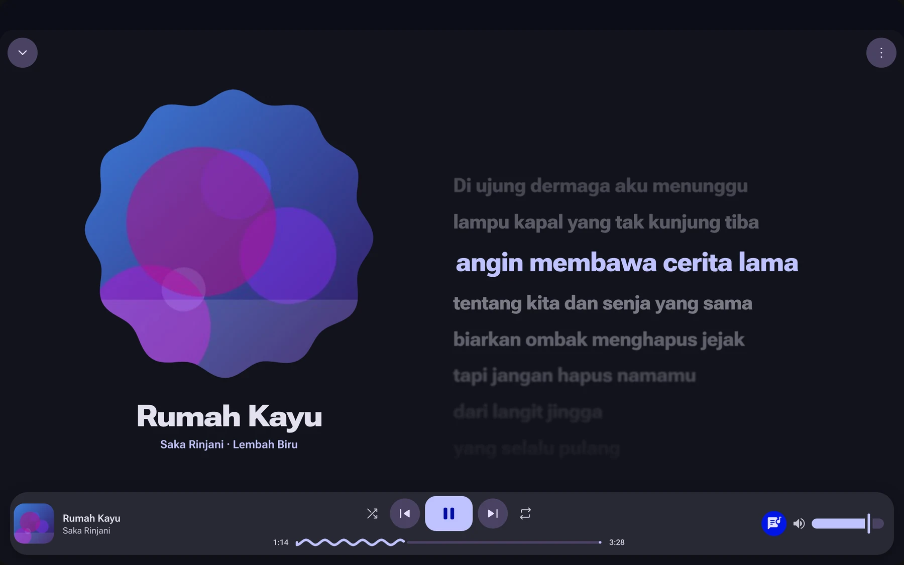
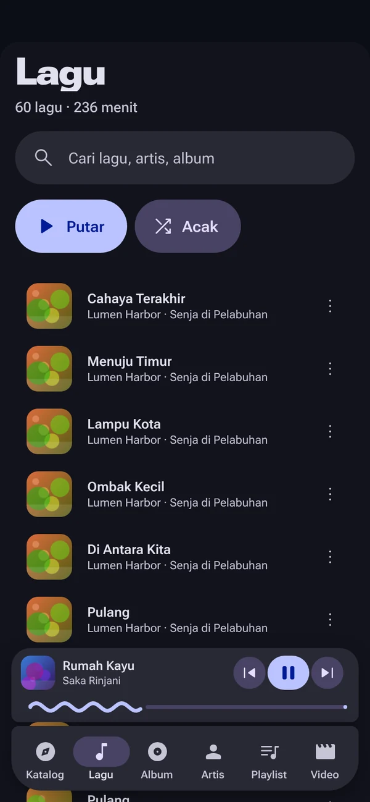
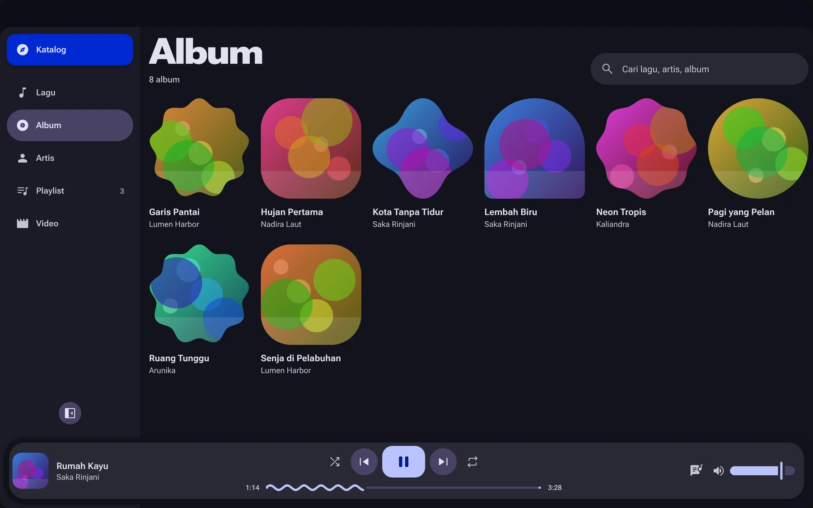
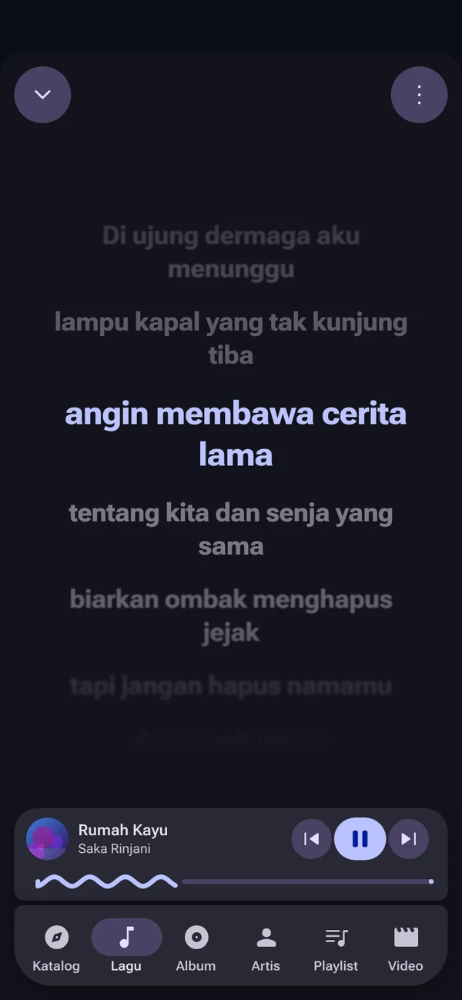

Your library, gapless
Scan folders and browse by song, album, artist or playlist. Gapless queue, shuffle, repeat and an equalizer. MP3, FLAC, AAC, OGG, Opus and WAV are decoded natively in Rust.
Local files, your own S3 bucket and streaming extensions, in a Material 3 Expressive interface that takes its colours from what's playing. No account, no tracking.
Linux · Windows · macOS · Android · iOS · MIT licensed


Songs, artists and covers in these screenshots are made up.
Features
Scan folders and browse by song, album, artist or playlist. Gapless queue, shuffle, repeat and an equalizer. MP3, FLAC, AAC, OGG, Opus and WAV are decoded natively in Rust.
From a sidecar .lrc, the embedded tag or LRCLIB, cached after the first download.
Stream from any S3-compatible bucket without downloading. Tags, covers and lyrics are read with range requests.
MP4, MKV, WebM and MOV from your folders or bucket. Paste a Stremio addon to browse catalogs, seasons and episodes, compare sources side by side, and pick subtitles with adjustable delay, size and colour.
Mornye and SpotiFLAC compatible .sflx extensions add online catalogs, downloads and lyrics. Load the default registry, any repository URL, or a package file.
MPRIS, SMTC, Now Playing on macOS and the iOS lock screen, the Android media notification and the system tray. Keeps playing in the background on mobile.
Design
The whole interface is recoloured from the art that is playing, with expressive shapes and spring motion, following Material 3 Expressive. Every track looks a little different.


Free and open source. Pick your platform and grab the file from the latest GitHub release.